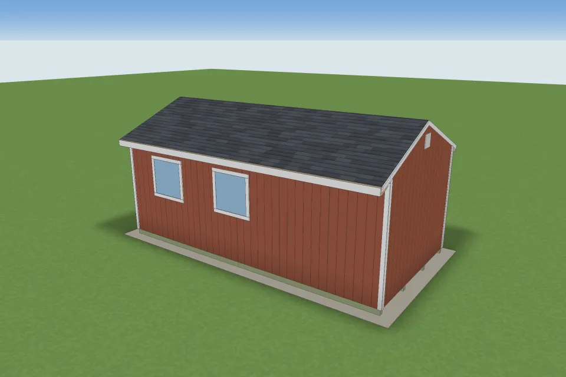

A 12x24 gable shed on skids, framed the common way, takes 229 framing pieces cut from 172 boards. The cut sheet's boards cost $1,441.97 (no way of cutting those pieces from those lengths can cost less than $1,437.66); a few spare boards bring the lumber to about $1,552.02. The whole shed, with siding, roofing, sheathing, fasteners and a gravel pad, comes to about $6,545.00 before sales tax, $22.73 per square foot.
Open Shed Designer and change the size, door and windows: the counts update to your design.

24 ft along the ridge, 12 ft across the gable, 8 ft walls (91-1/2" studs under three 1-1/2" plates), a 5/12 roof with a 12" overhang, 2x4 walls 16" on centre, pressure-treated 4x6 skids on a gravel pad, a 3/4" plywood floor, T1-11 siding and shingles. Rafters are cut 92.5" long including the plumb cut. Doors and windows are those of the tool's 12x16 preset, with kings, jacks, headers, sills and cripples framed around each.
| Material | Pieces | Boards | Board lengths | Cost |
|---|---|---|---|---|
| PT 4x6 | 8 | 8 | 8 x 12' | $263.04 |
| PT 2x6 | 23 | 23 | 23 x 12' | $326.14 |
| 2x8 | 4 | 4 | 2 x 8', 2 x 12' | $45.18 |
| 2x6 | 58 | 36 | 29 x 8', 7 x 12' | $272.83 |
| 2x4 | 136 | 101 | 74 x 8', 1 x 10', 26 x 12' | $534.78 |
Pieces are packed into 8 to 16 ft boards by a cut optimizer, so a stud comes from the cheapest board that holds it; one board often yields several pieces.
| Size | Pieces | Boards | Lumber | Whole shed |
|---|---|---|---|---|
| 8x8 | 114 | 78 | $563.82 | $2,698.42 |
| 8x10 | 124 | 85 | $656.92 | $3,154.74 |
| 8x16 | 165 | 116 | $899.59 | $4,014.48 |
| 10x10 | 140 | 95 | $790.54 | $3,702.91 |
| 10x12 | 149 | 102 | $874.97 | $3,977.76 |
| 10x14 | 174 | 118 | $1,012.92 | $4,464.33 |
| 10x16 | 183 | 129 | $1,087.26 | $4,729.19 |
| 10x20 | 202 | 149 | $1,267.98 | $5,442.38 |
| 12x12 | 153 | 108 | $923.74 | $4,216.75 |
| 12x14 | 180 | 125 | $1,072.54 | $4,755.31 |
| 12x16 | 188 | 134 | $1,142.03 | $4,991.85 |
| 12x20 | 207 | 154 | $1,329.18 | $5,786.08 |
| 12x32 | 279 | 217 | $2,007.68 | $8,249.14 |
| 14x14 | 195 | 132 | $1,218.93 | $5,347.57 |
| 14x20 | 222 | 160 | $1,515.87 | $6,462.12 |
| 16x20 | 229 | 166 | $1,630.62 | $6,878.21 |
| 16x24 | 251 | 182 | $1,896.05 | $7,753.57 |
| 8x12 | worked example, with the door and peak-height variants | |||
The counts were printed by the tool's own engine for these designs on 2026-10-29 (make-size-pages.mjs); a test re-runs the engine and fails if a number here drifts. Its tests check studs, jacks, headers and cripples by hand and that no piece floats or overlaps. It has not been checked by building a shed from it. Door and window count, wall height, roof pitch and local prices change every figure, so use the tool for your design. Your building department decides whether you need a permit.